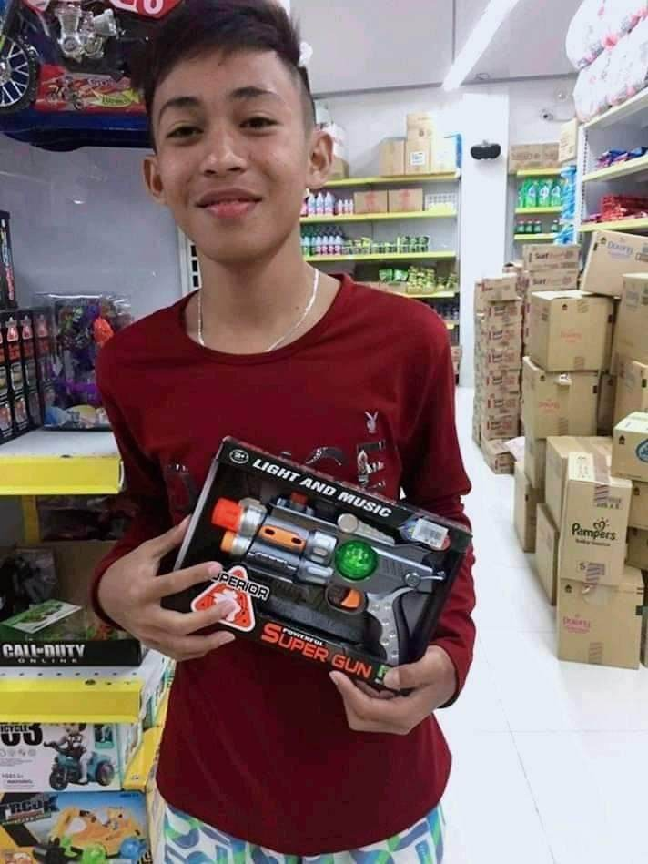

Vince Gerard L. Payot

1ST YEAR COMPUTER SCIENCE STUDENT
ABOUT ME
My name is Vince Gerard L. Payot, 19 yrs. old, live in Poblacion, Pilar, Bohol,
taking Bachelor of Science in Computer Science in our beloved University of Bohol.Im very ambitious persons with a big dreams for the future.
What is your guiding principle
in living your life and why is that so?
Studying hard can help me to achieve better grades, a better education,
and more chances in the future. It will also help me to easily
to work on my dream company where i can earn a decent salary and spoil my parents with the things we cant currently afford.
Enumerate your accomplishments, little or unimportant i may seems,
which you and your family are proud of.
I am proud of myself that i graduated secondary school level and was chosen to represent out municipality in the
sub-congrational meet and boholympic(sepak takraw) and i dont know if they are proud of it.
How are you alike and different from the other?
Maybe my similarity of others is that Im god fearing and have a dream to
become succsesful someday even my grade are not better which is my parents
expected and maybe im not like others who are family oriented.
What are your dreams and future plans?
Finish my degree to work as a web developer for my dream company in order to earn a decent salary and maintain financial stability in order to build
my dream home with my family, send my future children to a
high-end school so they won't go through what i have now and i can afford luxury brand.